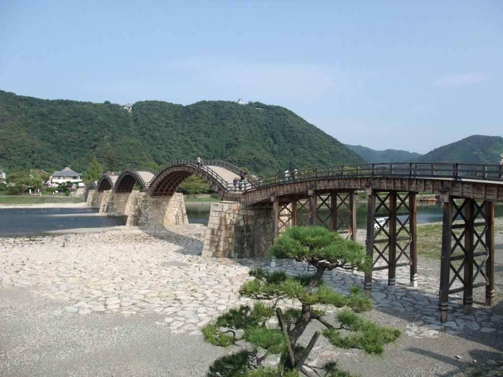

錦帯橋

錦帯橋とは？
岩国城下を二分して流れる大河の錦川。そこに架かる木造の造形美「錦帯橋」は5連のアーチ構造を有する、 木造橋としては我が国最大の文化遺産です。錦帯橋は元々「城門橋」、つまり城の大手門に架かる橋でしたが、 架橋されたときに城はすでに取り壊されていました。錦帯橋の創建には、「流れない橋を架けたい」藩主や 藩民の切なる願いや、岩国藩誕生に至る歴史的背景の中に橋成立の謎"小藩の熱き思い"が秘められています。 岩国城破却から58年後の延宝元年（1673年）、三代藩主吉川広嘉は、それまでの平坦な柱橋にかえて 木造5連のアーチ橋「錦帯橋」を架橋しました。それは城門橋と呼ぶより、岩国藩にとってはまさに城に取って代わる存在です。 橋の上部は木造木組構造を駆使し、下部はアーチ部分の橋脚を排し、築城技術を取り入れた洪水に耐える石垣積みの橋脚を配しました。 まさに、錦帯橋は藩の「城」と呼ぶにふさわしい構築物といえます。
(2017年 岩国国際観光ホテル http://www.iwakunikankohotel.co.jp/kintaikyo/)より
アクセス
飛行機
・羽田空港<- 95分 ->岩国錦帯橋空港
新幹線・東京 <- 4時間 -> 新岩国
・新大阪 <- 2時間 -> 新岩国
・広島 <- 16分 -> 新岩国
・博多<- 90分 -> 新岩国
JR山陽本線・広島 <- 50分 -> 岩国
・宮島口 <- 15分 -> 岩国
(2017年 岩国市公式ホームページ http://kintaikyo.iwakuni-city.net/access.html)より